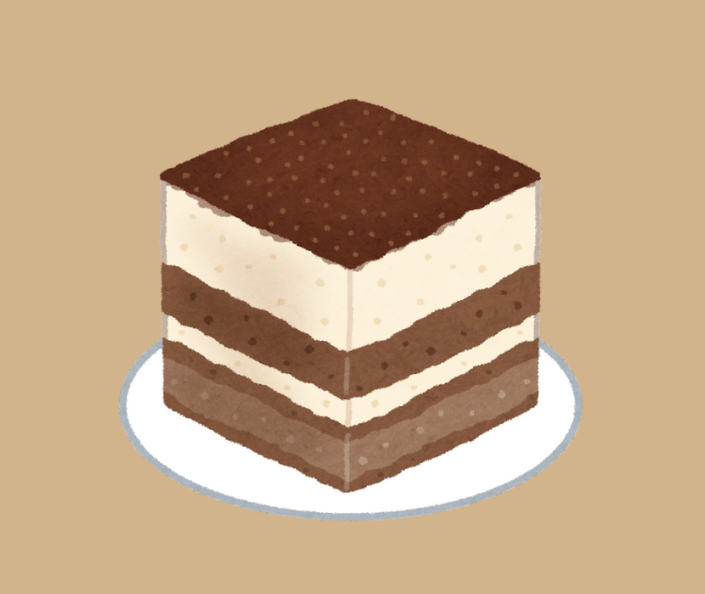

Welcome to Il mondo di Tiramisu
This website was created for one simple reason: we love tiramisu. Whether you're fan of this classic Italian dessert or just curious to learn more, you're in the right place. Here, youll find everything a tiramisu—recipe, tips for nailing that perfect creamy texture, and maybe even a bit of tiramisu history. Were passionate about sharing our love for this delicious treat and making it easy for everyone to enjoy it at home. So, grab a spoon and dig in! Were thrilled to have you here.
